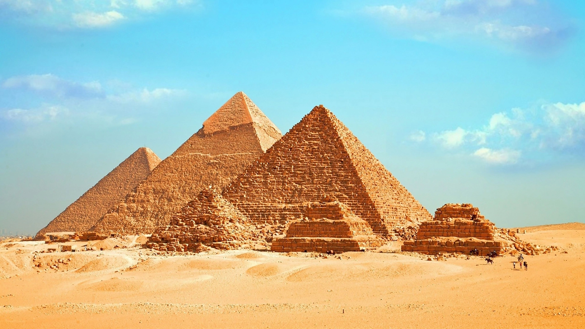

Les pyramides d'Égypte sont des monuments de pierre construits par l'Égypte antique, qui étaient utilisés, du moins pour les plus importants, comme tombeaux. Leur forme approche plus ou moins une pyramide géométrique. Elle comportent une ou plusieurs chambres internes reliées par des couloirs. Ce type de construction est caractéristique de l'Ancien Empire, mais quelques pyramides sont plus tardives.
Évolution du mastaba de la période thinite, les pyramides sont initialement exclusivement des tombeaux royaux. Par la suite, certaines sont construites pour d'autres personnes de la famille royale. Khéops semble avoir été le premier à autoriser ses épouses à se faire élever un tel tombeau.
Cent dix-huit pyramides sont recensées en Égypte, très variées par leur date de construction, leur taille, et leur configuration. Le plus grande et la plus emblématique, la pyramide de Khéops, fait partie des Sept Merveilles du monde antique et est classée au patrimoine mondial de l'humanité

Les plus grandes pyramides d'Égypte
Le classement ci-dessous utilise comme référence la longueur de la base de la pyramide (la hauteur est donnée à titre indicatif) :
Pyramide de Khéops (IVe dynastie) : 230 m (146 m) ;
Pyramide rouge, Snéfrou (IVe dynastie) : 219 m (105 m) ;
Pyramide de Khéphren (IVe dynastie) : 215 m (143 m) ;
Pyramide rhomboïdale, Snéfrou (IVe dynastie) : 189 m (105 m) ;
Pyramide de Meïdoum, Snéfrou (IVe dynastie) : 144 m (94 m) ;
Pyramide de Djéser (IIIe dynastie) : 121 × 109 m (62 m).